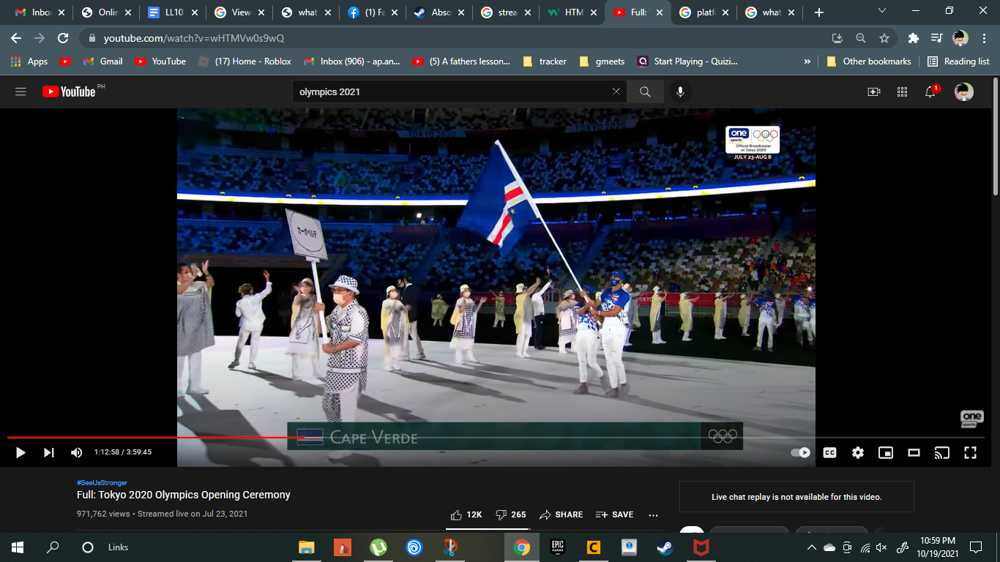
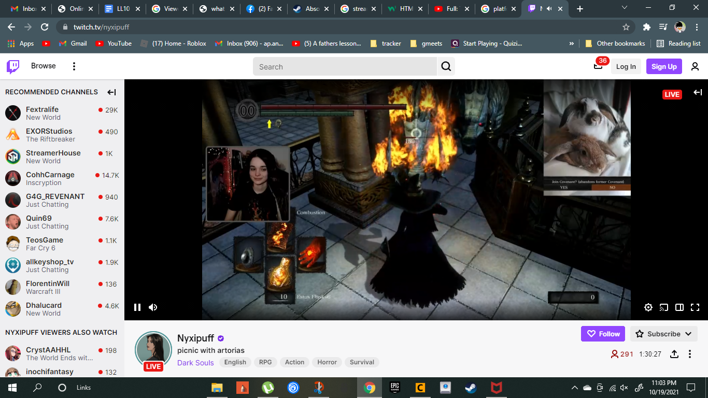

What is streaming
Definition of Streaming
Types of Streaming Content
Platforms used for streaming
Viewers analysis for each streaming category
Need of viewers
Characteristics of a good stream
platforms used for streaming
Jean rafael aguilar
The platforms that are on the list that are the commonly used by people everyday

YouTube
youtube is commonly used by people who are looking for entertainment,guides,and news and it is also used to rewatch something that you like
its also been used for international events such as the olympics
read more

Twitch
twitch is commonly used for gaming or for just hanging out
with your favorite streamers in twitch you can watch people do game challenges
you can choose any game that you want to watch in twitch
read more
Facebook
facebook live is commonly used for online selling and it helps
people around the world to earn money due to the pandemic
and you can also catch the latest news on facebook live
read more